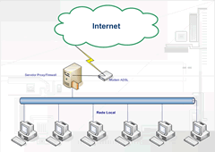

Um desenvolvedor web veterano que está sempre a procura de novas tecnologias que facilitem o desenvolvimento de aplicativos ricos para a internet. Louco por tecnologia, games e Linux.
Como a Internet em Banda Larga (Alta Velocidade) já é uma realidade acessível para as empresas e para os usuários domésticos do Brasil é necessária agora uma adequação da estrutura das redes locais para todos os computadores acessarem a Internet por uma mesma conexão.
As operadoras de acesso ADSL no país comercializam modelos de modem que, apesar de serem conectados ao computador através de um cabo de rede, não servem para serem conectados diretamente na rede para que todos os computadores possam acessar a Internet, isso porque eles precisariam ser modem e roteador. A Brasil Telecom, empresa que detém o monopólio do serviço ADSL em Santa Catarina só comercializa o "direito" de vários micros em uma rede acessarem a Internet, através do mesmo modem, se o cliente contratar o serviço ADSL EMPRESARIAL, que tem como vantagem principal, além de permitir o acesso de varias máquinas, fornecer um IP fixo para o servidor da empresa ser acessado da Internet. O problema é que os custos do acesso empresarial são muito elevados.
Operadoras e provedores que comercializam acesso a Internet banda larga utilizando outras tecnologias, como rádio ou cabo, também disponibilizam apenas um ponto de acesso ou cobram taxa por cada ponto de acesso a rede.
Agora: O que um usuário domestico com dois computadores ou uma pequena empresa com 10 ou mais maquinas faz para acessar a Internet?
Para que vários computadores em uma rede local acessem a Internet de banda larga é necessário que um computador seja configurado como gateway ou roteador para a rede externa (Internet). Isso é feito da seguinte forma: É necessário disponibilizar um dos computadores da rede para gerenciar o serviço de roteamento. Este micro fica configurado como um servidor de acesso a Internet, mas ele não precisa ser um servidor dedicado, possibilitando que seja utilizado por um usuário para outros fins.
Neste computador é instalada uma segunda placa de rede, sendo que uma fica configurada para a rede interna e a outra para o acesso a Internet. Após a configuração das duas placas de rede é instalado um software que vai fazer o roteamento de pacotes da Internet. Isto quer dizer que todas as requisições feitas por computadores dentro da rede são retransmitidas pelo roteador que, quando recebe as respostas, redireciona as mesmas para o computador que fez a requisição.
A forma mais segura de se fazer isso é utilizando o método NAT ou Network Adress Translation, que significa tradução de endereço de rede, que faz com que os computadores da rede externa apenas "enxerguem" o roteador e não os micros da rede interna evitando ataques, invasões e infecções por vírus. A este servidor podem ser adicionados outros serviços, como Proxy e Firewall.
O serviço de Proxy adiciona maior inteligência ao compartilhamento com a Internet, possibilitando bloquear o acesso a sites de conteúdo pornográfico, restringir o acesso a Internet mediante senha, ter uma cópia das paginas mais visitadas no servidor para que o tempo de resposta seja mais rápido e, por último, gerar registros dos acessos feitos à Internet como, por exemplo, os sites que determinado usuário acessou, qual o horário de maior utilização dos recursos, entre outros.
Já o serviço de Firewall serve para garantir uma maior segurança, bloqueando as portas TCP/IP de serviços que não tem necessidade de estar disponível na Internet, como banco de dados, impressoras, compartilhamento de arquivos entre outros serviços.
Uma variação desta configuração é substituir uma das placas de rede do servidor por um modem 56Kbps, que garante o acesso discado a Internet. Então faz-se a configuração do servidor para discagem sob demanda para a internet, ou seja, quando um computador na rede interna tentar acessar algum endereço de Internet, o servidor discará automáticamente para a Internet e, após certo tempo de inatividade da conexão, ele desconecta.
Veja o diagrama de uma rede com o acesso a internet compartilhado clicando na imagem ao lado. Para vizualizar o diagrama em imagem possivel de zoom e alta qualidade clique aqui.


){kind=link}